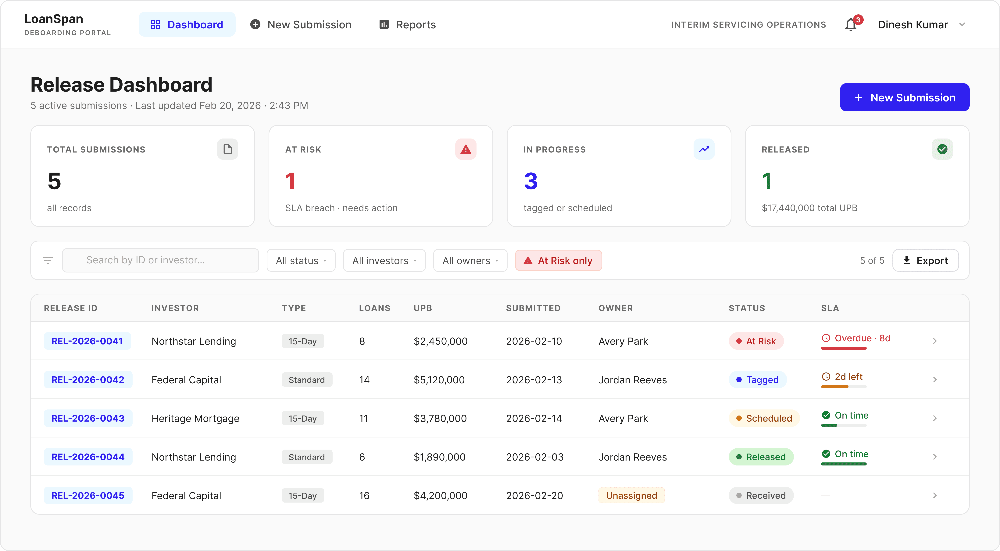
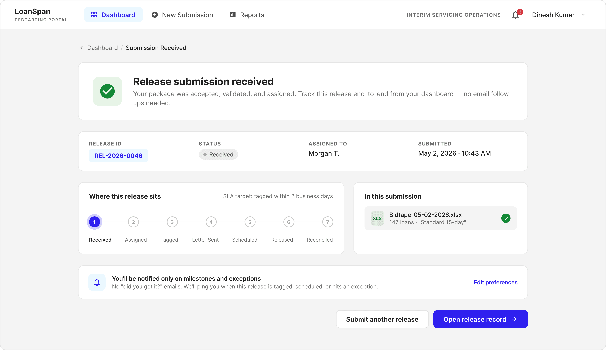
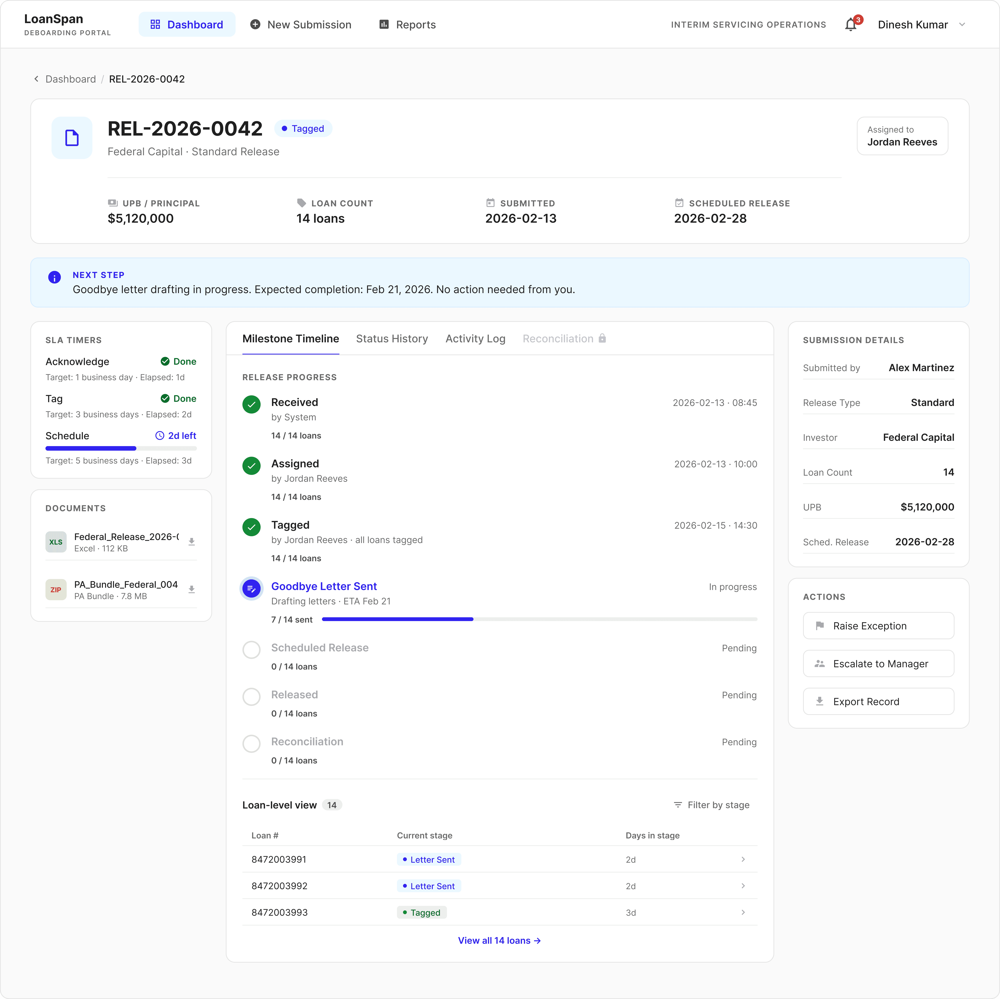
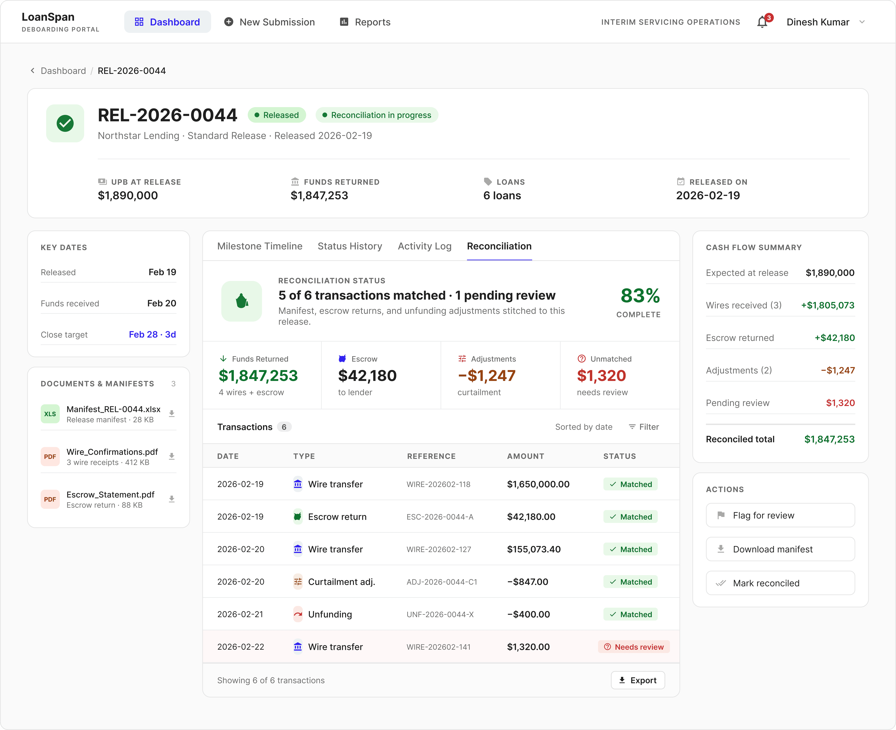

Press Esc or click anywhere to close
A submission and tracking portal so analysts can validate, reconcile, and ship a loan release from a single record. Validation moves to the door, exceptions get a defined lane, and reconciliation finally ties back to the release record. Informed by deep research with three representative client orgs.

Lead Product Designerresearch, IA, interaction, visual
Onity Group1 PM, 3 engineers, 1 designer (me)
6 monthsdiscovery through MVP build, 2026
Figma · FigJam · Dovetailprototype walkthroughs with 3 client orgs
I've modified the visual treatment, screen names, and workflow details shown in this case study to respect Onity Group's confidentiality. The design approach, decisions, and outcomes are intact.
If you only read three paragraphs, read these. Problem, change, and results in about a minute.
Mortgage clients ship loan releases to the servicing team in many different shapes. The receiving team took that variation as escalations, formatting kickbacks surfaced three days late, and accounting reconstructed reconciliation by hand across separate systems with no shared record.
I designed one release pipeline that catches errors at submission, gives exceptions a defined lane with owner and SLA, and ties every package to a single release record. The receiving team gets one shared structure, regardless of upstream variation.
9 of 9 prototype users found release status unaided. All three client orgs aligned on the MVP scope of secure submission plus reliable tracking. Projected weekly time saved per analyst is about six hours, validated against current follow-up and reconciliation patterns.
Mortgage clients needed to ship loan releases to the servicing team, then reconcile what happened after funds moved. But each client prepared packages in its own systems and formats, so the receiving team took on that variation as escalations and side conversations. Formatting kickbacks took roughly three days to surface, exceptions had no SLA or audit trail, and accounting reconstructed reconciliation by hand across separate systems. The goal: catch errors at the door, give exceptions a structured lane, and build a single release record that handles upstream variation downstream.
Even within the three orgs we interviewed, the patterns varied widely, Encompass plus an Access database for one, a custom LOS report for another, an aggregator matrix for a third. Across the rest of the platform's clients, that variation only widens. There's no shared validation layer, so formatting issues are caught downstream, not at the door.
Formatting kickbacks, MERS updates, missing scheduled dates, and investor approval delays all turn into email threads routed through a single escalation contact. There's no structured exception lane, no SLA, no owner, no audit trail.
After release, manifests, escrow returns, and unfunding adjustments arrive across separate systems. Accounting teams cross-reference by hand because nothing ties post-release activity back to the release record.
"This should work like a workflow or ticketing system. One record per submission, with assignment and history."Client Ops Lead · Investor Servicing Group
"Email is risky. We want secure upload and a dashboard, not a chain of forwards."Director of Client Operations · Mortgage Lender
Three goals to fix the broken state: catch errors at the door instead of downstream, give exceptions a defined workflow with ownership and SLAs, and design a release record that takes each client's upstream shape and produces one shared structure for the receiving team.
Catch formatting issues, missing fields, and duplicates at the moment of submission, not three days later, downstream of the receiving team. The sender should see the error first.
Replace escalation-by-email with a structured exception lane: type, owner, SLA, resolution log. Make exceptions a first-class state, not a side conversation.
Design a release record that takes each client's upstream shape and presents one shared structure downstream, so the receiving team isn't doing manual reconciliation across many different operational realities.
A release record that handles how each client prepares its data, different LOS systems, different reports, different investor mixes, and gives the receiving team one shared structure downstream.
"Submission is better. Tracking is still the problem."Patrick H. · Client Operations, Mortgage Servicing Partner
Today, clients send Excel plus Purchase Advices to a shared inbox and wait. I designed the submission flow so that within seconds of upload, clients see what was accepted, what needs fixing, and the record ID created on the receiving side.
"Email is risky. We want secure upload and a dashboard, not a chain of forwards."Director of Client Operations · Mortgage Lender
Why: Formatting kickbacks were one of the top sources of rework, wrong report version, missing date, mismatched investor codes. I moved validation to the front of the workflow so common mistakes get flagged the moment a file is uploaded.
Clients see field-level errors in plain language, fix them in place, and submit cleanly the first time, instead of finding out three days later through a forwarded email.
Why: Without a confirmation, clients didn't know if their package was received, queued, or stuck in spam. I made the system create a release record with a unique ID the moment a submission is accepted.
Every accepted submission shows up immediately on the client's dashboard with a record ID, owner, and starting status, making "Did you get it?" emails unnecessary.

Bulk PA upload was prioritized for launch to mirror today's mental model. Phase two reduces PA dependency by collecting the exact fields the receiving team needs directly inside the form, documents become required only for audit and exceptions.
Once a release record exists, clients see it move. The dashboard surfaces aging up top; each record opens to a full timeline plus reconciliation.
"This should work like a workflow or ticketing system. One record per submission, with assignment and history."Client Ops Lead · Investor Servicing Group
Why: Clients told me they didn't just want a list, they wanted to know which loans were at risk. So the dashboard surfaces aging records, SLA breaches, and "waiting on investor" states up top, before anything else.
A release analyst can land on the dashboard in the morning, see the three loans aging out, and know exactly where to spend the next thirty minutes, instead of triaging a 200-message inbox.
Why: Status today is reconstructed from email threads and reports. I built a timeline that shows each milestone, Received, Tagged, Goodbye letter, Scheduled, Released, with timestamps and a visible "waiting on investor" state when the ball is in someone else's court.
When a release is delayed, clients can see exactly where it's sitting and why. Exception handling, holds, fixes, escalations, happens inside the record with a full audit trail.

Why: Accounting teams kept asking ops "what is this money?" because escrow returns, manifests, and unfundings showed up days after the release with no clear context. I added a reconciliation view that ties amounts, dates, and references back to each release record.
Accounting and ops finally share one source of truth for what happened after release, fewer detective tickets, faster month-end, and a clean handoff between teams.

Six screens span the full release flow, from a clean upload at the door to reconciliation handed cleanly to accounting. Use the arrows to step through; click any image to view it at native resolution.
The portal is in early build, scoped down to a focused MVP: secure submission plus reliable status tracking. To pressure-test the design before development, I ran prototype walkthroughs with release analysts and client operations leads from three client organizations. The signal was strong.
Every interviewee located a tracked release on the dashboard within seconds, no instructions needed.
In the prototype, every formatting error was caught and corrected during submission instead of post-send.
All three client groups confirmed that secure submission plus pipeline status would replace their current spreadsheet-and-email workflow.
Once the MVP is live, I'll watch for three signals to confirm the portal is doing its job, and to surface where phase two should focus.
I'll track the volume of "did you get it?" and "where are we?" emails. A drop signals clients trust the portal as the source of truth.
I'll measure how many formatting issues get flagged during upload vs. downstream. Higher catch-rate means less rework and fewer kickbacks.
I'll track how long it takes accounting to close out a release after funds move. A shorter cycle confirms the reconciliation snapshot is doing its job.
Two layers of impact that don't show up in the metrics. The work that shaped how I designed it, and the patterns the team kept using after I shipped.
Three client orgs prepared releases three different ways, and the temptation was to ship three workflows. Treating that variation as a layer above one shared record (rather than three parallel pipelines) is what made the MVP feasible. The discipline came from interview tagging, not whiteboarding.
This was the first end-to-end release surface on Onity's platform, so the components and the discovery artifacts both became templates. The next two projects on the roadmap pulled from this work instead of starting over.